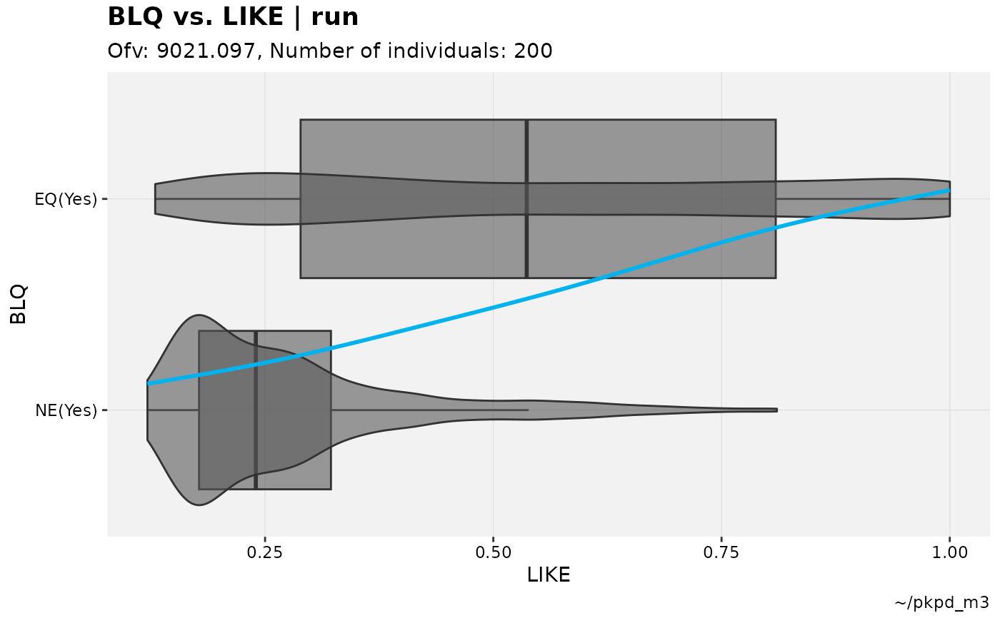
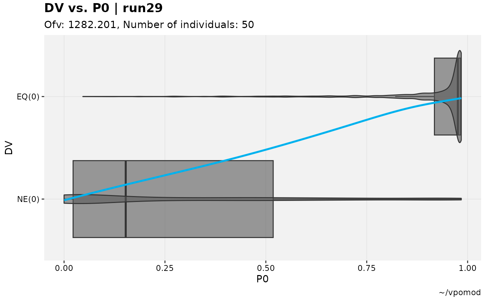
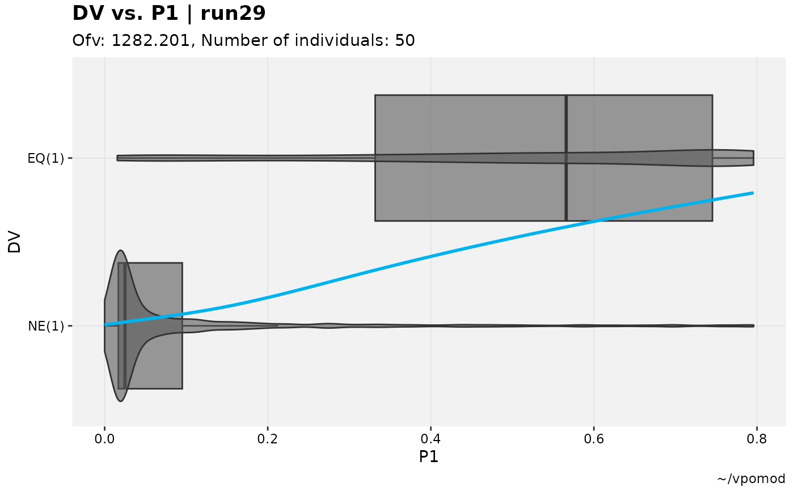
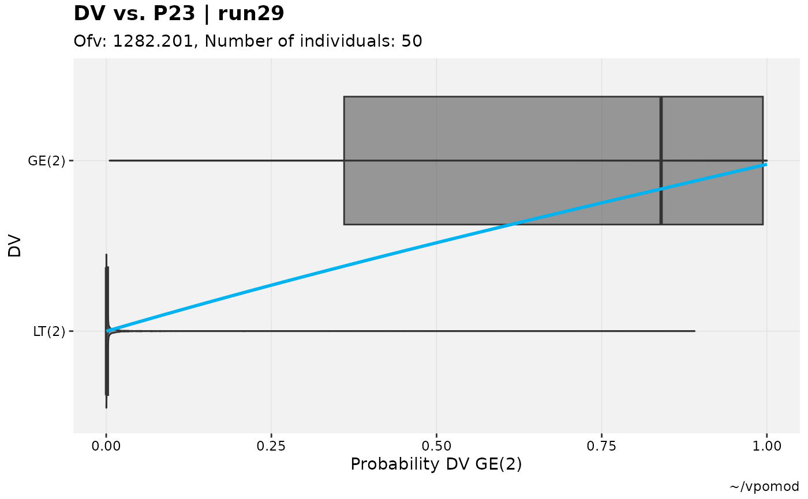

These plots attempt to provide a means of verifying that the estimated likelihoods and probabilities for categorical outcomes are captured within the model.
When the smooth spline is included (type includes "s"), it is
expected that the overall trend is up and to the right; a relatively
flat trend suggests that the modeled likelihood is inconsistent with the
observed outcome.
Usage
catdv_vs_dvprobs(
xpdb,
mapping = NULL,
cutpoint = 1,
type = "vbs",
title = "@y vs. @x | @run",
subtitle = "Ofv: @ofv, Number of individuals: @nind",
caption = "@dir",
tag = NULL,
xlab = c("probability", "basic"),
facets,
.problem,
quiet,
...
)Arguments
- xpdb
<
xp_xtras> or <xpose_data> object- mapping
ggplot2style mapping- cutpoint
<
numeric> Of defined probabilities, which one to use in plots.- type
See Details.
- title
Plot title
- subtitle
Plot subtitle
- caption
Plot caption
- tag
Plot tag
- xlab
Either use the typical basic x-axis label (the cutpoint-defined column name) or label it based on the probability/likelihood it is estimating.
- facets
Additional facets
- .problem
Problem number
- quiet
Silence extra debugging output
- ...
Any additional aesthetics.
Examples
# Test M3 model
pkpd_m3 %>%
# Need to ensure var types are set
set_var_types(catdv=BLQ,dvprobs=LIKE) %>%
# Set probs
set_dv_probs(1, 1~LIKE, .dv_var = BLQ) %>%
# Optional, but useful to set levels
set_var_levels(1, BLQ = lvl_bin()) %>%
# Plot with basic xlab makes no assumptions
catdv_vs_dvprobs(xlab = "basic")
#> Using data from $prob no.1
#> Filtering data by EVID == 0
#> `geom_smooth()` using method = 'gam' and formula = 'y ~ s(x, bs = "cs")'
#> `geom_smooth()` using method = 'gam' and formula = 'y ~ s(x, bs = "cs")'

# Test categorical model
vismo_xpdb <- vismo_pomod %>%
set_var_types(.problem=1, catdv=DV, dvprobs=matches("^P\\d+$")) %>%
set_dv_probs(.problem=1, 0~P0,1~P1,ge(2)~P23)
# Various cutpoints (note axes labels and texts)
vismo_xpdb %>%
catdv_vs_dvprobs(xlab = "basic")
#> Using data from $prob no.1
#> Filtering data by EVID == 0
#> `geom_smooth()` using method = 'gam' and formula = 'y ~ s(x, bs = "cs")'
#> `geom_smooth()` using method = 'gam' and formula = 'y ~ s(x, bs = "cs")'

vismo_xpdb %>%
catdv_vs_dvprobs(cutpoint = 2, xlab = "basic")
#> Using data from $prob no.1
#> Filtering data by EVID == 0
#> `geom_smooth()` using method = 'gam' and formula = 'y ~ s(x, bs = "cs")'
#> `geom_smooth()` using method = 'gam' and formula = 'y ~ s(x, bs = "cs")'

vismo_xpdb %>%
catdv_vs_dvprobs(cutpoint = 3, xlab = "basic")
#> Using data from $prob no.1
#> Filtering data by EVID == 0
#> `geom_smooth()` using method = 'gam' and formula = 'y ~ s(x, bs = "cs")'
#> `geom_smooth()` using method = 'gam' and formula = 'y ~ s(x, bs = "cs")'
# Latter is arguably clearer with default xlab
vismo_xpdb %>%
catdv_vs_dvprobs(cutpoint = 3)
#> Using data from $prob no.1
#> Filtering data by EVID == 0
#> `geom_smooth()` using method = 'gam' and formula = 'y ~ s(x, bs = "cs")'
#> `geom_smooth()` using method = 'gam' and formula = 'y ~ s(x, bs = "cs")'
